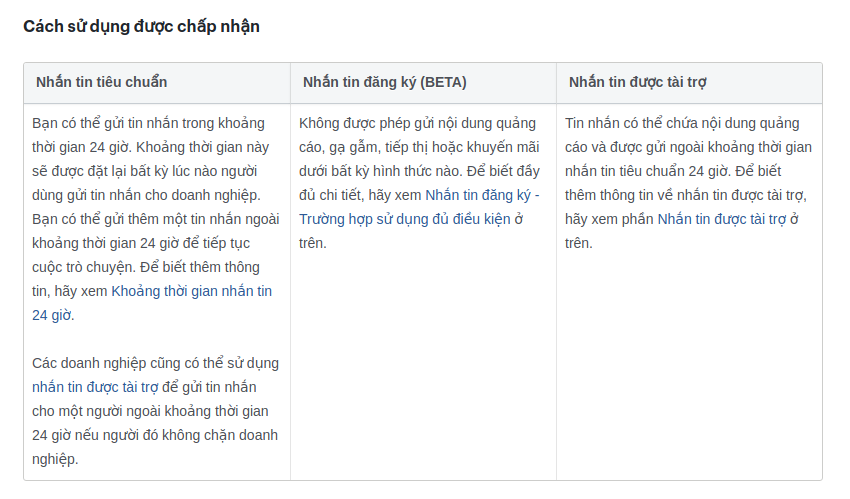
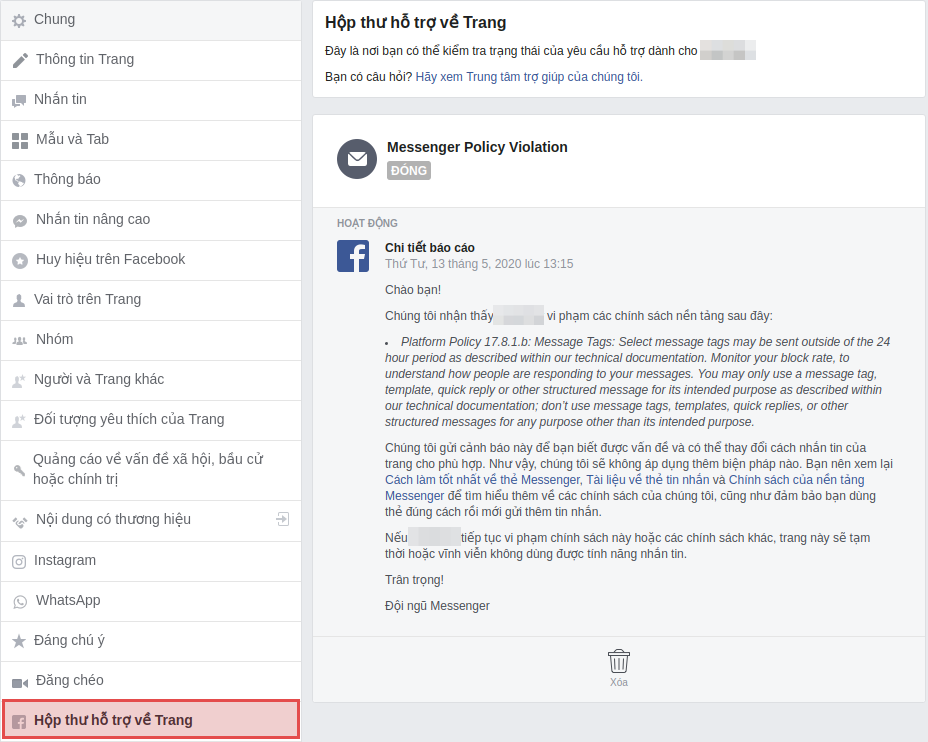
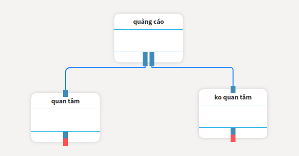
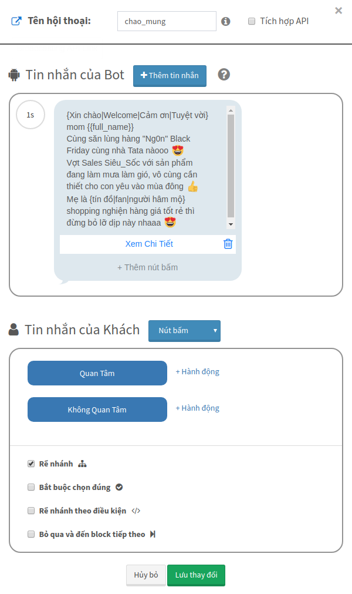
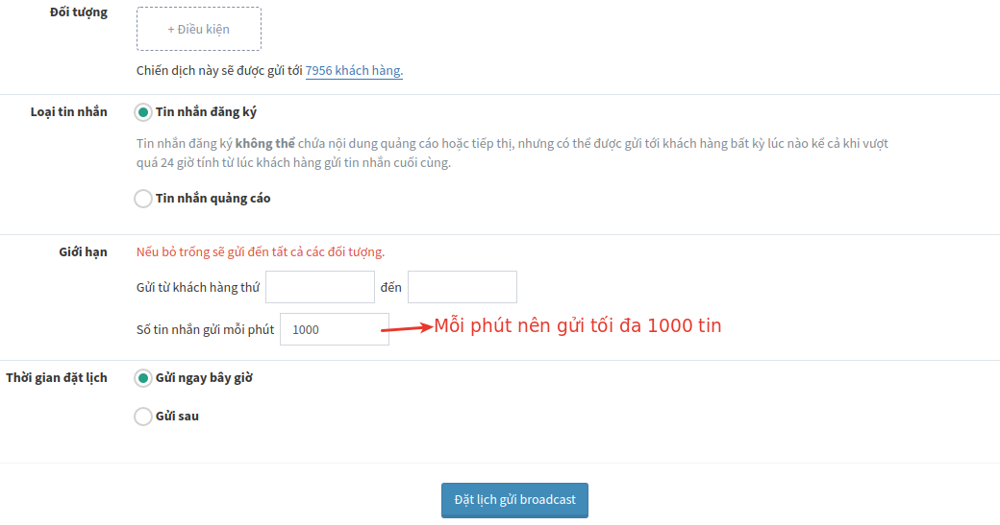
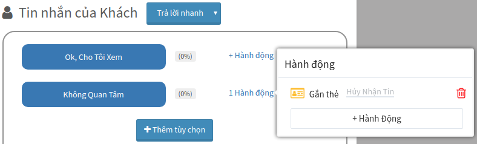
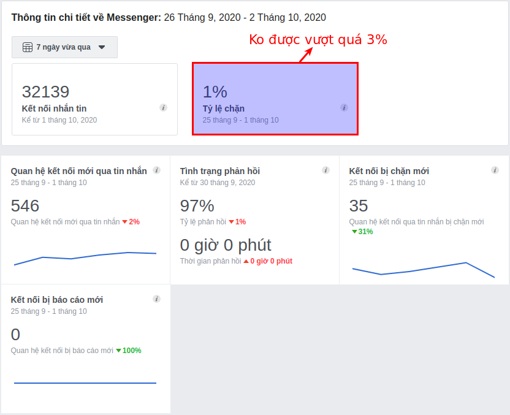
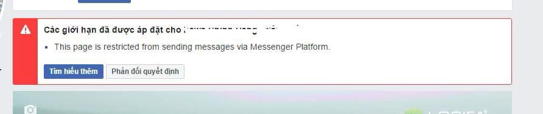
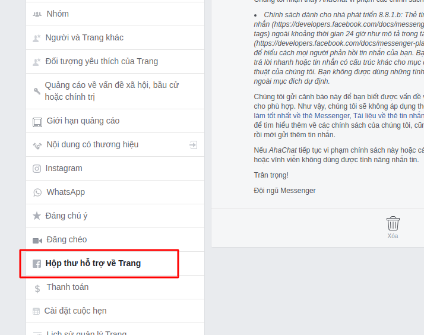
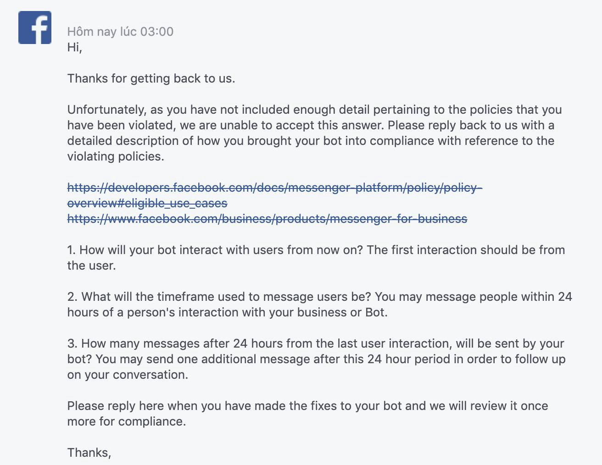

Dùng bot đúng cách?
Dùng bot đúng cách có lẽ là câu hỏi được quan tâm nhiều nhất của các chủ bot. Bởi nếu bạn dùng sai, bạn SPAM hàng loạt hay bạn bị khách hàng REPORT hàng loạt. Thì chắc chắn đó là nguyên nhân chính dẫn đến trang của bạn bị Hủy đăng, hay thậm chí là bạn bị chặn Tính năng nhắn tin từ trang của mình.

Trong AhaChat có 2 tính năng nếu bị làm dụng quá mức thì trang của bạn có nguy cơ ra đảo cao là Gửi broadcast và Chăm sóc. Trong đó Gửi Broadcast ngoài 24 giờ là nguy cơ số 1 mà một số chủ bot đang dùng AhaChat mắc phải.
Đó là lý do chúng tôi chia sẻ bài viết này để bạn có thể hiểu đúng về nguy cơ và cách phòng tránh. Nó không đảm bảo tỉ lệ chắc chắn 100% page bạn sẽ an toàn, vì cơ chế bắt lỗi của Facebook hoàn toàn dựa vào AI, ngay cả đội ngũ support của FB họ cũng không dám khẳng định chắc chắn lý do bạn bị phạt.
Nhưng nếu bạn cứ đâm đầu Gửi broadcast hàng loạt sau 24 giờ mà không tuân theo những quy tắc này thì bạn rất dễ vi phạm chính sách của Facebook Messenger.
1. Hiểu chính sách Messenger
Facebook có rất nhiều chính sách (gọi là Policy) về Quảng cáo, về Cộng đồng, về Messenger. Mà chatbot chỉ chạy duy nhất trên nền tảng Messenger nên ta chỉ tập trung vào chính sách này.
Tìm hiểu chi tiết chính sách tại đây (dùng tiếng Anh để cập nhật nội dung mới nhất):
https://developers.facebook.com/docs/messenger-platform/policy/policy-overview/
https://developers.facebook.com/policy#messengerplatform
Trong chính sách của mình, FB đã nói rõ những loại tin nhắn và thời gian được phép gửi cho khách hàng như sau:
1.1 Tin nhắn tiêu chuẩn:
Bạn có thể gửi tin nhắn bất cứ thể loại gì từ thông báo đến quảng cáo cho khách hàng trong vòng 24h tính từ lúc khách hàng nhắn tin cho page.
1.2 Tin nhắn theo thẻ:
Bạn chỉ được gửi tin nhắn thông báo cập nhật quan trọng cho khách hàng, loại tin nhắn này có thể gửi bất kỳ thời gian nào (có thể ngoài cửa sổ 24h như tin nhắn tiêu chuẩn).
Tham khảo cách sử dụng tại đây.
1.3 Tin nhắn OTN (thông báo 1 lần):
Bạn chỉ được gửi một tin nhắn duy nhất cho khách hàng đã bấm vào nút "Đăng ký nhận tin" khi chat với bot và nội dung tin nhắn phải đúng chủ đề. Ví dụ khách đăng ký nhận tin quà tặng 8/3 thì bạn không được gửi quà tặng 30/4.
Tham khảo cách sử dụng tại đây.
1.4 Tin nhắn được tài trợ (phải trả tiền quảng cáo cho FB):
Bạn có thể gửi tin nhắn bất cứ thể loại gì từ thông báo đến quảng cáo cho khách hàng vào bất cứ thời gian nào. Tuy nhiên, cách phân phối tin nhắn này của FB có phần hạng chế, nghĩa là FB sẽ chia nhỏ đối tượng ra để gửi. Ví dụ bạn cần Gửi broadcast đến 5,000 khách hàng thì FB sẽ chia ra mỗi ngày gửi 1,000 khách hàng nên bạn phải mất đến 5 ngày để gửi hết tin quảng cáo.
Nhìn vào chính sách sử dụng tin nhắn trên, ta dễ dàng thấy cách Gửi broadcast hàng loạt an toàn nhất là Tin nhắn tiêu chuẩn, Tin nhắn OTN và Tin nhắn được tài trợ. Vì vậy nếu bạn chỉ dùng 3 loại tin nhắn này thì không cần phải đọc nội dung bên dưới.
Nhưng đời thì không như mơ, các nhà kinh doanh họ đã có sẵn một lượng khách hàng inbox lớn, họ muốn gửi một thông điệp khuyến mãi bán hàng, họ không muốn trả tiền cho Tin nhắn được tài trợ (hoặc có thể vì hạn chế phân phối nên họ không muốn chờ lâu vì FB sẽ chia nhỏ tin nhắn ra gửi nhiều ngày). Họ cũng không muốn dùng Tin nhắn tiêu chuẩn hay Tin nhắn OTN thì số lượng khách hàng tiếp cận được ít. Họ buộc phải dùng loại tin nhắn của cùng là Tin nhắn theo thẻ.
Và nếu bạn cũng có suy nghĩ giống họ thì bạn phải đọc tiếp nội dung bên dưới để biết nguyên nhân và cách phòng tránh vi phạm chính sách.
2. Làm sao biết mình bị VPCS
Khi bạn vi phạm chính sách lần đầu thì FB sẽ gửi một thông báo cảnh cáo vào trong Hộp thư hỗ trợ. Bạn vào đây check nội dung sẽ biết mình đang phạm lỗi gì để khắc phục.

3. Nguyên nhân và cách phòng
3.1 Nội dung chứa quảng cáo
Đây là vấn đề đau đầu nhất vì các bạn dùng broadcast chủ yếu để gửi quảng cáo, hoặc đôi khi các bạn cũng không biết nội dung của mình có phải là quảng cáo hay không.
Vì thế nếu tránh được thì đừng dùng luôn các từ quảng cáo như "khuyến mãi, giảm giá, free, hot sale, deals, 100%, miễn phí". Hoặc nếu bắt buộc phải dùng thì phải biến tấu các từ này lại để tránh AI của FB phát hiện, ví dụ từ “giảm giá” thì sửa thành “g.i.ả.m 9iá”…
3.2 Nội dung thiếu tính tương tác
Đây cũng là một nguyên nhân mà các bạn ít để ý, ví dụ tin nhắn broadcast của các bạn gửi đến khách hàng mà khách hàng chỉ đọc và không trả lời lại. Sau đó 1 tuần các bạn lại tiếp tục gửi broadcast đến những người này thì sẽ có nguy cơ bị khóa page vì AI của FB gắn cờ spam cho page.
Vì thế, nội dung tin nhắn ngoài việc thu hút thì cần phải chèn thêm nút bấm hoặc trả lời nhanh để kích thích khách hàng tương tác bằng cách bấm vào. Đừng chờ khách hàng trả lời lại bằng tin nhắn vì họ rất lười.

3.3 Nội dung bị lặp số lượng lớn
Bạn tạo 1 broadcast với cùng 1 nội dung và gửi đến tầm 10,000 người, điều này sẽ khiến FB hiểu là bạn đang spam, vì messenger là nơi tương tác mang tính cá nhân và hai chiều. Cho nên nội dung tin nhắn của mỗi người thông thường sẽ không giống nhau.
Vì thế, bạn phải dùng spintax (ví dụ {xin chào|welcome|cảm ơn}) - là một biến tấu thành nhiều nội dung khác nhau cùng với những thuộc tính cá nhân hóa {{gender}} và {{fullname}} để mỗi khách hàng sẽ nhận được một tin nhắn khác nhau và cá nhân hóa.

3.4 Tần suất gửi broadcast quá thường xuyên
Hãy tưởng tượng mỗi ngày bạn đều gửi broadcast đến cùng 1 khách hàng thì bạn sẽ hiểu điều gì sẽ xảy ra. Không những FB mà ngay cả khách hàng cũng ghét điều này.
Vì thế, hãy gửi dãn ra ít nhất là 1 tuần 1 lần cho 1 khách hàng, hoặc lý tưởng nhất là 1 tháng 1 lần.
3.5 Page bị khách hàng CHẶN
Nội dung không phù hợp thì sẽ bị khách hàng ghét và report, đó là lẽ tất nhiên dù cho tin nhắn đó không phải là quảng cáo. Đây là lỗi nặng nhất khiến tính năng gửi broadcast của page bị FB có thể khóa vĩnh viễn.
Vì thế, tốt nhất là cài đặt số lượng khách hàng nhận tin mỗi phút ở ngưỡng 100 đến 1,000. Đây là người an toàn mà AhaChat cài đặt sẵn để giúp bạn tránh bị report.

Nội dung tin nhắn cũng phải có một nút tên là "Không Quan Tâm" hoặc "Hủy Nhận Tin" để khách hàng có thể bấm vào đó thay vì chặn page.

Đồng thời, sau mỗi đợt gửi broadcast, bạn phải vào Fanpage > Thông tin chi tiết để kiểm tra tỉ lệ chặn là bao nhiêu, nếu tỉ lệ là 1% thì nên đổi nội dung broadcast hoặc dừng gửi, còn nếu tỉ lệ chặn trên 3% thì bắt buộc phải xóa broadcast ngay.
Ví dụ: https://www.facebook.com/PAGE_ID/insights/?section=navMessages
(thay PAGE_ID thành page id của bạn)

Chú ý: nếu vi phạm chính sách sẽ bị hủy đăng page hoặc khóa tính năng gửi broadcast giống thông báo dưới đây.

3.6 Cách kháng nếu lỡ vi phạm:
Vào Cài đặt page > Hộp thư hỗ trợ về Trang

Nội dung kháng như sau:
Hi Facebook Team,
I will use bot to interact automatically with my customers, and promise to follow all of the Platform’s Policies in order to to ensure a good experience for my clients. I think my non-promotional message can help my customers easily search and access the necessary information from my business.
I will send interactive messages to my customers during lunch breaks, and their spare time. Because of that, I think it will not bother to them at all.
Customers’ interactions of my page are increasing, so that I want to interact with all of them, giving them good experiences. After 24 hours from the last interaction between page and customers, I will not send any message to the customer after 24 hours since our last interaction.
I promise that from now on, I will not send advertising, promotions, discounts to customers, and will comply to the Platform’s Policies from Facebook.
Thank you!

Bạn có bất kỳ câu hỏi nào liên quan đến vấn đề dùng bot đúng cách trong AhaChat? Bạn muốn khởi chạy chiến dịch tiếp cận khách hàng của mình bằng Chatbot với một số lời khuyên chuyên môn từ Đối tác tiếp thị của Facebook? Đừng ngần ngại liên hệ với chúng tôi để có câu trả lời nhanh nhất và hiệu quả nhất! Tận hưởng công cụ chatbot miễn phí của chúng tôi mà không cần phải trả bất kỳ chi phí nào!